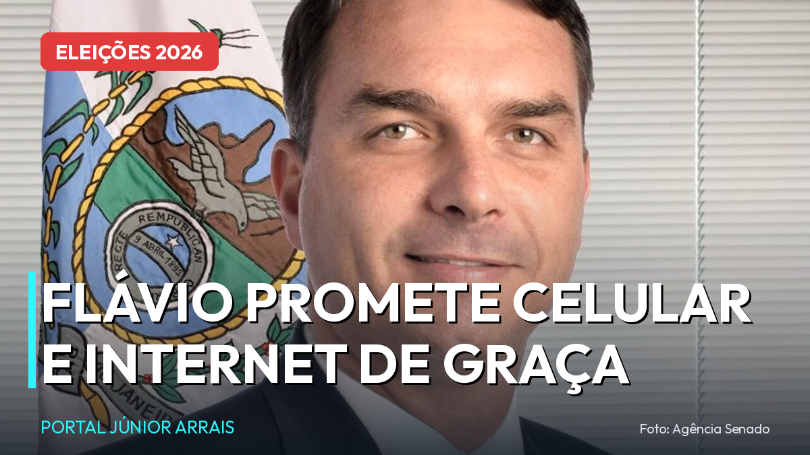

Flávio Bolsonaro promete internet e até celular de graça para mulheres; entenda a proposta

O senador e pré-candidato à Presidência Flávio Bolsonaro (PL-RJ) anunciou um pacote de promessas voltado às mulheres que inclui internet de graça para 70 milhões de brasileiras e até a possível distribuição gratuita de aparelhos celulares para quem não pode comprar — incluindo também os idosos.
O plano, batizado de "Brasil por Elas", foi apresentado em uma transmissão ao vivo no dia 16 de julho, ao lado de Daniella Marques (Republicanos), ex-presidente da Caixa Econômica Federal e cotada para ser vice na chapa do senador.
O que foi prometido
- Internet gratuita para 70 milhões de mulheres;
- Possível celular de graça para mulheres e idosos que não têm condição de comprar o aparelho;
- Um aplicativo chamado "central da mulher", integrado ao Gov.br, reunindo serviços públicos;
- Vouchers para creche e medidas de apoio ao empreendedorismo feminino.
Por que as mulheres viraram prioridade
O movimento tem explicação eleitoral. Na última pesquisa Datafolha, de junho, a simulação de segundo turno mostrou Lula (PT) com 47% contra 43% de Flávio — mas, entre as mulheres, a distância é bem maior: 52% a 37% para o atual presidente. A rejeição ao senador nesse público chega a 53%. As promessas buscam justamente reduzir essa diferença.
Atenção: é promessa de campanha, não benefício
Ponto importante para você não cair em golpe: nada disso existe hoje. São propostas de um pré-candidato para o caso de vitória na eleição de outubro — não há cadastro aberto, não há fila, não há aplicativo para baixar. Qualquer site, link ou mensagem prometendo "cadastro para o celular grátis" ou "internet gratuita do governo" é golpe. Benefício de verdade, quando existe, é anunciado nos canais oficiais do governo e nunca cobra taxa.
Com informações da live de pré-campanha e da pesquisa Datafolha de junho de 2026. Foto: Agência Senado. Conteúdo informativo — não substitui orientação individualizada sobre o seu caso.